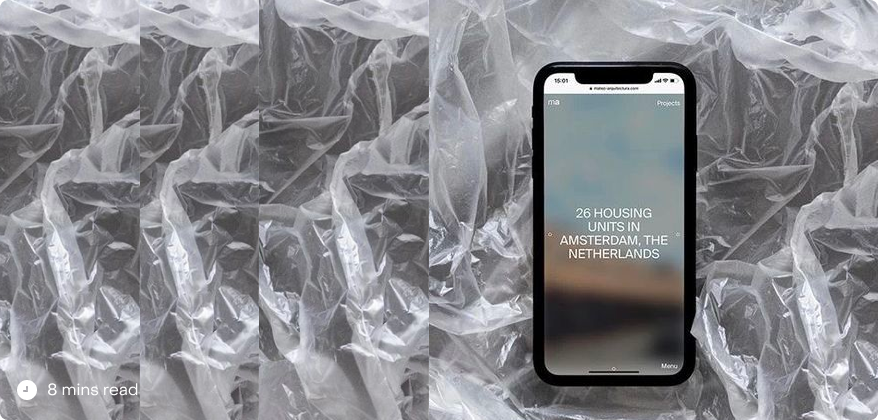

Designing an online magazine for a
beauty & cosmetic brand from scratch.

Background
Tira, India's speediest growing beauty e-commerce site, had a brilliant idea—to create the ultimate beauty hub for its users! Beyond just selling top-notch products, Tira aimed for a complete experience where users could dive in, learn, and make savvy decisions.
What is Topshelf?
Topshelf is a goldmine, boasting a mix of content formats like blogs, videos, stories, and interviews. Here, users can indulge in genuine insights straight from the beauty
pros themselves. It's like having a cozy chat with your BFF about everything beauty-related!
"Top Shelf" as the name suggests, houses the crème de la crème of content. Think of the top-tier items on those high shelves in a store. It's all about a carefully chosen
selection of best-quality material, perfect for customers who want nothing but the best insights and entertainment.
Where are we today ?
In our present circumstance, we have an abundance of high-quality, reliable, and engaging content. The feedback we've received on our content thus far has been
overwhelmingly positive. However, our weakness lies in our inability to effectively communicate this content to users.
There was a lack of discoverability with respect to Topshelf.
Currently, Top Shelf articles on the homepage achieve a 0.8% CTR. Initially, Top Shelf was a single widget with refreshed carousels twice a week, limiting content lifespan
and accessibility
By creating a designated section, we ensure our content remains visible for longer, improving engagement and user experience. This shift promises to drive higher CTRs and
deeper audience connections
Design Process
IDEATE
IDEATE
IDEATE
IDEATE
We kicked off our design process with thorough research and benchmarking to understand user expectations. This informed our brainstorming sessions, where we fine-tuned our requirements. This collaborative effort led to the creation of both Business Requirement Documents (BRD) and Product Requirement Documents (PRD), laying a solid foundation for our project.
What are the objectives with the new design?
Community Building :Community Building : The initiative goes beyond merely facilitating e-commerce transactions. By offering users a rich repository of engaging
content encompassing blogs, videos, stories, and interviews, it fosters a sense of community and belonging within the platform's ecosystem.
User Education : In the realm of beauty and skincare, consumer behavior often involves extensive research and consideration before making purchasing decisions.
Recognizing this trend, Topshelf serves as an invaluable resource for users seeking to make informed choices about their beauty regimen.
Cross-linking : With topshelf, we seamlessly integrate content with the shopping experience. This strategic approach aims at driving traffic to shop through content
integration
Enhance Brand Visibility : Through informative and engaging content, brands gain exposure, credibility, and lasting presence, connecting with consumers and driving
engagement. Facilitate social sharing of articles, images, and product recommendations to amplify brand reach and engagement.
Scalability : mix media all under one roof seamlessly Reimagine the entire flow - Interviews by beauty pros Revisiting older articles - bookmarks